Small moments. Greater confidence.
Owlat UI/UX review · 1 October 2026 · 12 proposals. These wireframes illustrate the intended interactions; they are not implemented after screenshots.
P1 · #1042CSV import: resolve conflicting identity mappings before preview and submission
The importer can preview and validate one email address but import a different address from the same row. Auto-detection maps every header containing 'email' to the identity field; preview and validation take the first matching column, while serialization overwrites the address with the last nonempty matching column. This compromises trust in a migration and can associate profile data with the wrong contact.
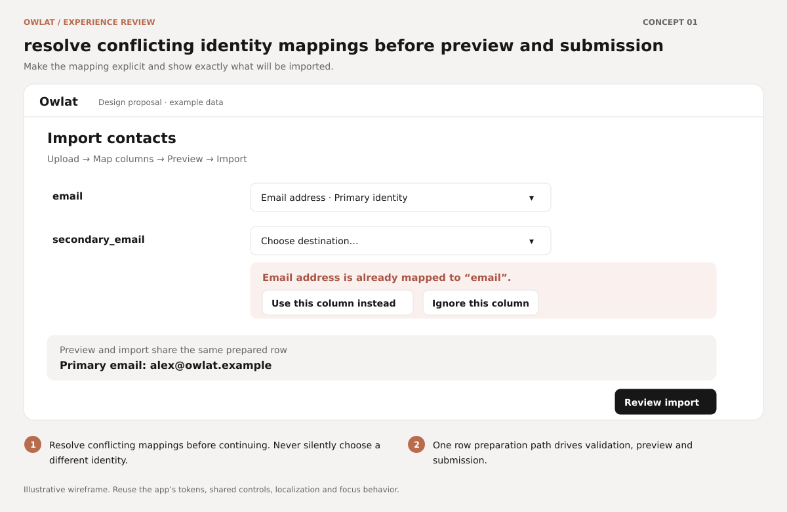
Open GitHub issueEditable SVG
Evidence and acceptance criteria
Browser-confirmed in real Vue components with a ten-row fixture: the preview showed contact0@owlat.example while the intercepted import payload contained billing0@owlat.example. Both columns were automatically mapped to Email. All writes were intercepted by the dev-only harness; no live contacts were imported. Existing tests cover single identity mappings but not this conflict.
- Two email headers cannot produce competing identity mappings.
- Next is blocked until conflicting scalar mappings are resolved.
- The previewed address equals the submitted address for every row, including blank secondary cells.
- Add a regression case with distinct email and secondary_email values.
Automations: make save status and activation reflect the persisted configuration
Automatic saving has no dependable visible state, and activation can use a previously saved configuration while the inspector shows newer or failed edits. Save Draft continues after a failed step save and can report success. The save baseline is taken from live currentConfig after awaiting the mutation, so an edit made during a request can be incorrectly marked clean. Users need confidence about which configuration is active.
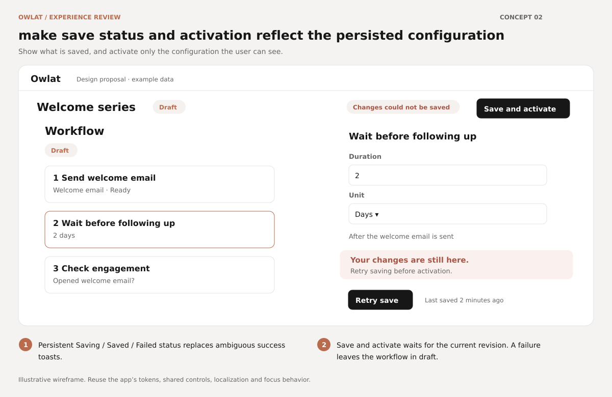
Open GitHub issueEditable SVG
Evidence and acceptance criteria
Source-confirmed save and activation control-flow findings. Editors automatically save on change/blur, so reproduce pending/failed writes rather than assuming all edits require manual Save. Reviewed useAutomationSteps tests: simple immediate successful saves clear dirty state, but pending edits, failed Save Draft, and activation persistence are not covered. Page rendering tests mock the steps composable.
- Changes made while a request is pending remain dirty unless a later request persists them.
- Step-save failure retains inputs and prevents misleading Draft saved messages.
- Activation and Resume wait for required saves and abort on failure.
- Retry visibly recovers without losing the user's configuration.
Automations: preserve pending or failed step edits across inspector and structure changes
The page protects ordinary step-to-step navigation, but inspector Close and Add step bypass that protection. The config watcher also replaces the local draft whenever the server's steps array updates. After an automatic-save failure or during a pending write, closing the inspector, adding a step, reordering, or receiving an unrelated live update can silently erase recoverable work.
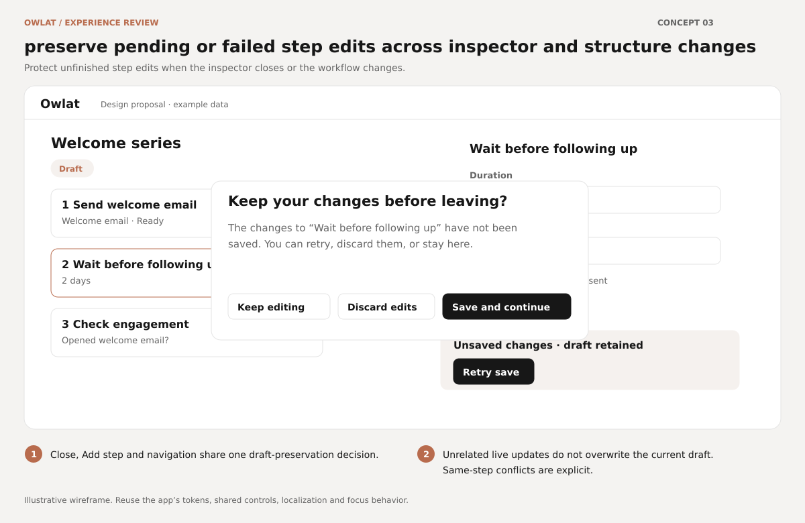
Open GitHub issueEditable SVG
Evidence and acceptance criteria
Source-confirmed direct selection-reset and unconditional watcher behavior; no browser failure injection performed. Existing useAutomationSteps tests cover initial selection and an immediate successful save, while page tests stub the composable; pending/failed draft preservation and unrelated live updates are not exercised.
- Close and Add step cannot silently discard a failed or pending draft.
- Cancel keeps selection and every entered value intact.
- Updates to other steps preserve the current dirty configuration.
- Same-step remote edits produce an explicit choice instead of overwriting local inputs.
Automation builder: support keyboard step selection and reordering
Existing workflow steps are selected by clicking a plain div, while ordering relies on a nonfocusable drag handle. Keyboard users can reach some add/delete controls but cannot complete the central task of opening an existing step's settings or changing workflow order.
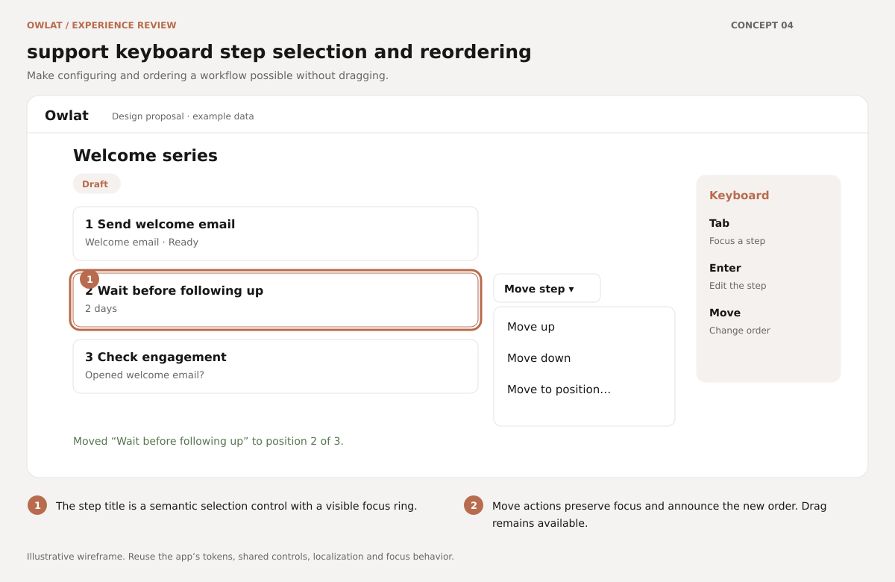
Open GitHub issueEditable SVG
Evidence and acceptance criteria
Source-confirmed missing keyboard selection/reordering controls. Reviewed useAutomationSteps tests: drag indices and backend reorder outcomes are covered, and page tests render the real draggable, but keyboard operation is not asserted.
- Tab reaches every existing step and Enter/Space opens its inspector.
- Reordering is possible without dragging and preserves the same backend behavior.
- Focus returns appropriately after inspector close and remains on moved steps.
- A screen reader receives step name, selected state, and reorder result.
Automation builder: replace the fixed inspector with a responsive sheet on narrow screens
The editor always reserves 384px for its inspector, even when no step is selected, in an unresponsive side-by-side flex container with clipping. Phone widths and high browser zoom leave the workflow canvas with little usable room and can make configuration controls unreachable.
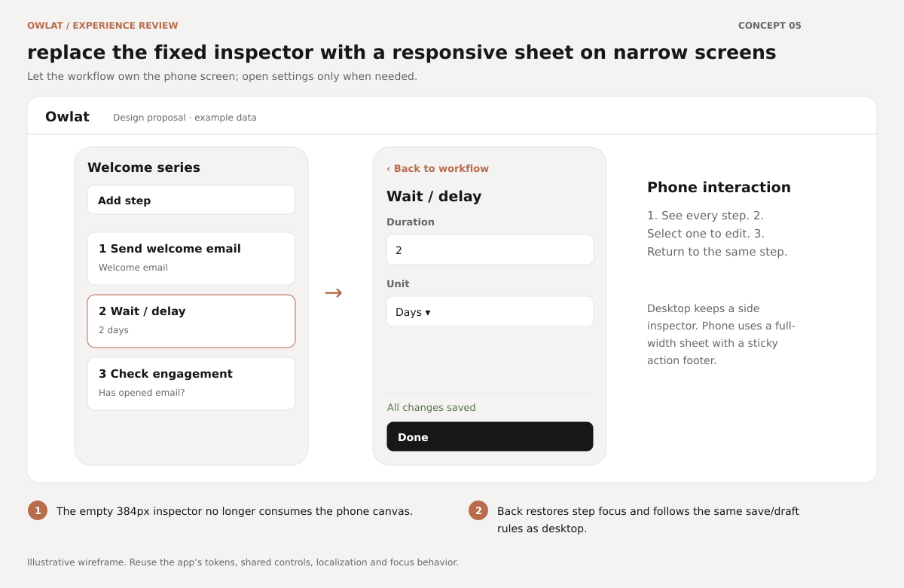
Open GitHub issueEditable SVG
Evidence and acceptance criteria
Browser-confirmed at 390×844 using the real populated eight-step editor. The empty inspector measured x=48, width=384, right=432; the clipped workflow remained as a thin strip behind it. See current mobile screenshot. Desktop screenshot is 1280×800. Further 320px and 200% zoom verification belongs in implementation acceptance.
- Complete add/select/configure/reorder operations at 320px, 390px, 768px, and 200% zoom.
- No clipped controls or page-wide sideways navigation.
- Sheet closure restores focus to its step and respects pending/failed edits.
- Desktop retains a useful inspector without wasting space when it is empty.
Campaign and automation template pickers: search and select templates beyond the first page
Both pickers request 100 templates but consume only the results array and never request another page. Campaign search filters that loaded slice, making older templates inaccessible and reporting No matches even when a suitable template exists. Larger organizations cannot reliably reuse their content.
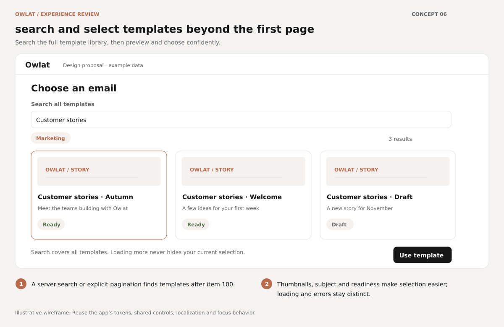
Open GitHub issueEditable SVG
Evidence and acceptance criteria
Source-confirmed pagination gap; no browser fixture with 101+ templates created. Reviewed usePaginatedQuery and useOrganizationPaginatedQuery: neither automatically drains pages. Existing automation and wizard tests stub template data and do not exercise second-page discovery.
- A template beyond item 100 is discoverable and selectable on both surfaces.
- Search covers the full searchable set instead of the first page.
- Selected template details remain visible when outside the current results.
- No matching templates is shown only after the search result is known; query failure has Retry.
Campaign creation: compose new email content before advancing to review
Choosing a new template creates only metadata and advances directly to Review. The Content stage is considered complete as soon as a template ID exists, while Review shows its name and says it can be edited later without offering body composition or a rendered preview. The user reaches the send decision with an empty email, which the send backend ultimately refuses.
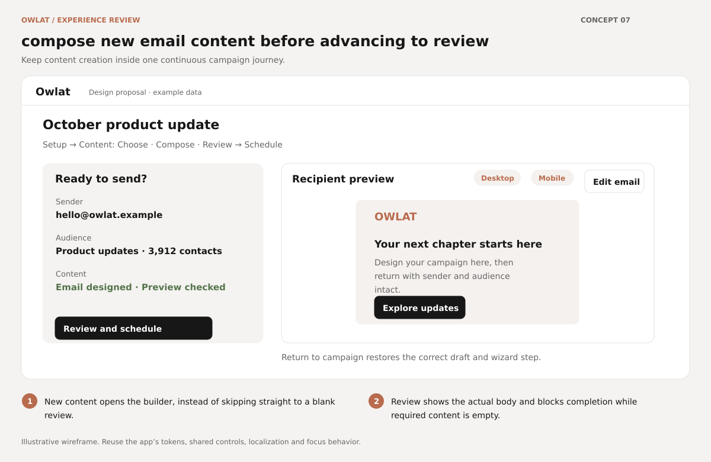
Open GitHub issueEditable SVG
Evidence and acceptance criteria
Source-confirmed wizard flow and missing-body backend refusal; the proposed compose and preview interaction is a design improvement. Reviewed newWizardUrlState tests: they stub Content and verify URL reachability, not composition or body readiness.
- New-template creation opens the builder and returns to the correct campaign draft.
- An empty body cannot appear as completed content or a send-ready review.
- Review displays the rendered recipient experience and a direct editing action.
- Editing retains sender, audience, subject, and scheduling selections.
Assistant: retain questions until send succeeds and offer inline retry
The Assistant clears a written question immediately after emitting send. Creating the conversation or sending the message can then fail, leaving only a toast and no recoverable question. Unlike ChatInput, the Assistant has no awaited send result or submission state. Repeated submissions before streaming starts can also overlap.
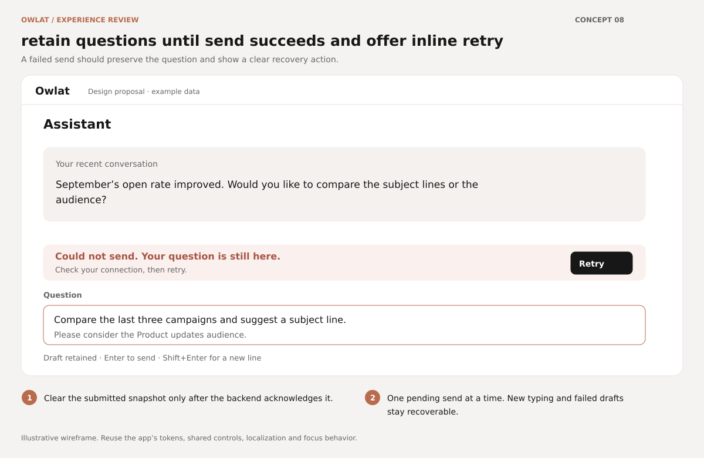
Open GitHub issueEditable SVG
Evidence and acceptance criteria
Browser-confirmed: after injecting a rejected mocked mutation (network failure), Send emptied the textarea; only a toast remained. This was exercised in the real Assistant page with populated fixture conversations. No live questions were sent.
- Creation and send failures preserve the exact question, including newlines.
- A pending submission cannot start a second identical request.
- Typing while a request is pending does not get cleared by its completion.
- Retry sends once to the intended conversation, with clear success/failure feedback.
Assistant: preserve reading position while responses stream
Every change to the last message text or status schedules an unconditional scroll to the bottom. When users scroll up to reread earlier information while a response arrives, the next update pulls them away. This makes lengthy answers and tool-assisted conversations frustrating to read.
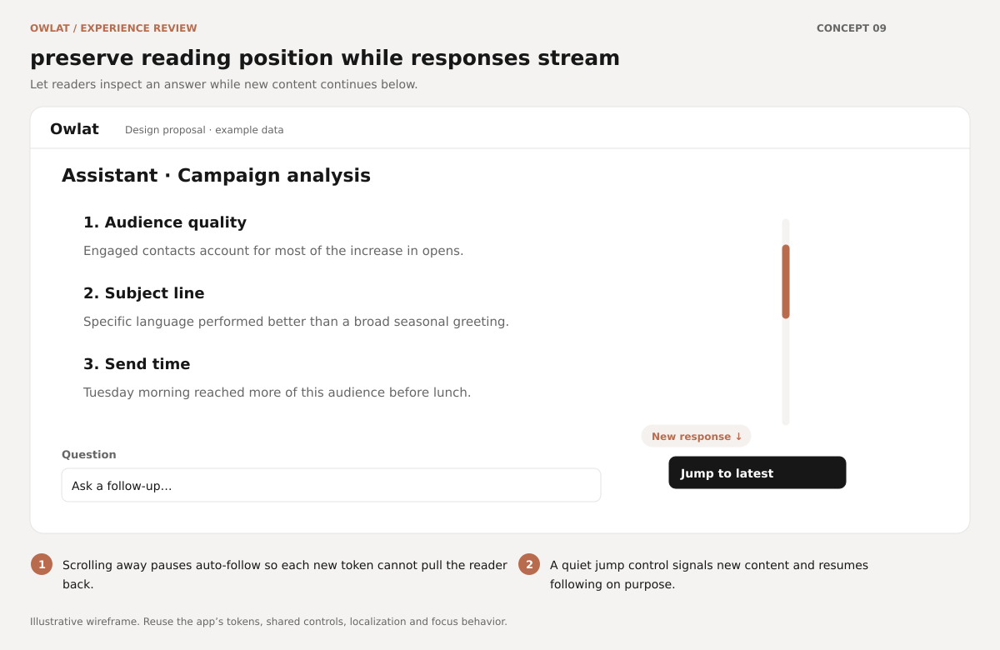
Open GitHub issueEditable SVG
Evidence and acceptance criteria
Source-confirmed interaction; live backend streaming was not exercised. Treat saved browser screenshots as fixture-based visual context.
- Scrolling upward during streaming is respected across text and tool/status updates.
- The jump control appears only when new content exists below the current view.
- Clicking Jump to latest resumes following until the user scrolls away again.
- Reduced motion and keyboard focus remain usable.
Assistant: make conversation selection and the question field accessible
Conversation rows are clickable divs with no keyboard semantics or tab stop. Their Rename/Delete buttons are keyboard reachable, but the main action of opening the conversation is not. The composer textarea also relies on a disappearing placeholder without a persistent label. On touch devices the tiny hover-revealed row actions are hard to discover.
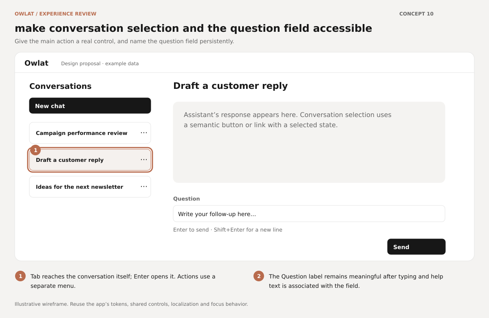
Open GitHub issueEditable SVG
Evidence and acceptance criteria
Source-confirmed; shared-browser DOM inspection verified that populated conversation rows have role=null and tabindex=null and the textarea has no aria-label.
- Every conversation opens with keyboard and is identified by its full title to assistive technology.
- Selection, Rename and Delete are distinct semantic controls without nested interactive elements.
- The question field keeps a meaningful accessible name when filled.
- At 390px, conversation selection and actions can be operated without hover.
Chat and Assistant: do not send messages while Enter confirms IME composition
Both composers treat every unmodified Enter as Send without checking composition state. Users writing Japanese, Chinese or Korean often press Enter to confirm a candidate. That keystroke can submit incomplete text; Assistant additionally clears it immediately. This undermines basic writing reliability for multilingual users.
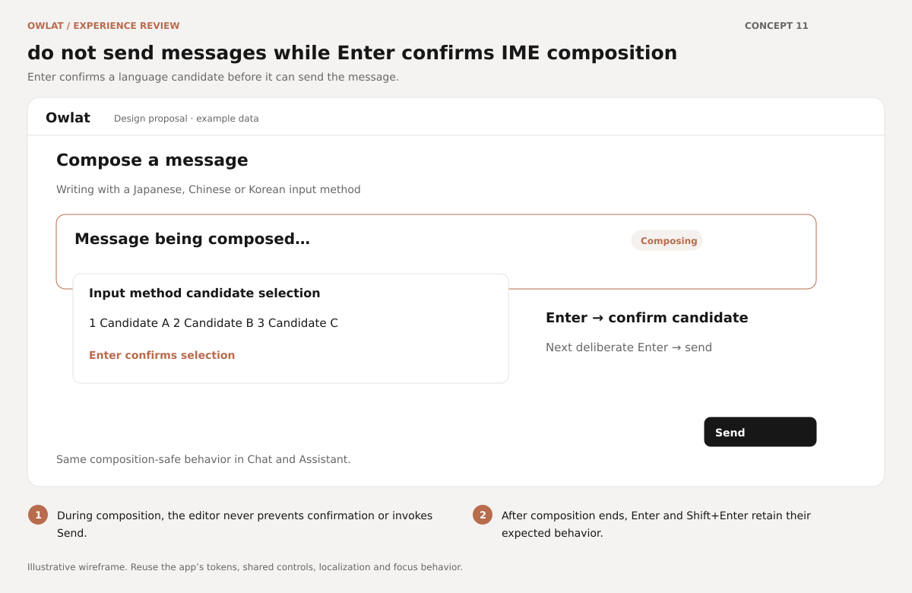
Open GitHub issueEditable SVG
Evidence and acceptance criteria
Browser-confirmed for Assistant using a synthetic keydown with key=Enter and isComposing=true: the textarea emptied and submission ran. Chat shares the unguarded Enter pattern by source inspection. Native Japanese/Chinese/Korean IMEs and WebKit still need verification during implementation.
- Enter during composition does not invoke send or clear the draft in either composer.
- After composition finishes, ordinary Enter sends once and Shift+Enter inserts a newline.
- Verify with real IMEs on at least Chromium and WebKit, in addition to a composed-event regression case.
- Mention selection still takes precedence where applicable.
Schedule send: explain invalid custom times and show the scheduling timezone
A past custom date enables Schedule but its click silently returns, so users cannot tell why the action did nothing. The label is not associated with the native input. When recipients do not share a different timezone, the dialog supplies no explicit sender timezone, leaving custom-time interpretation unclear.
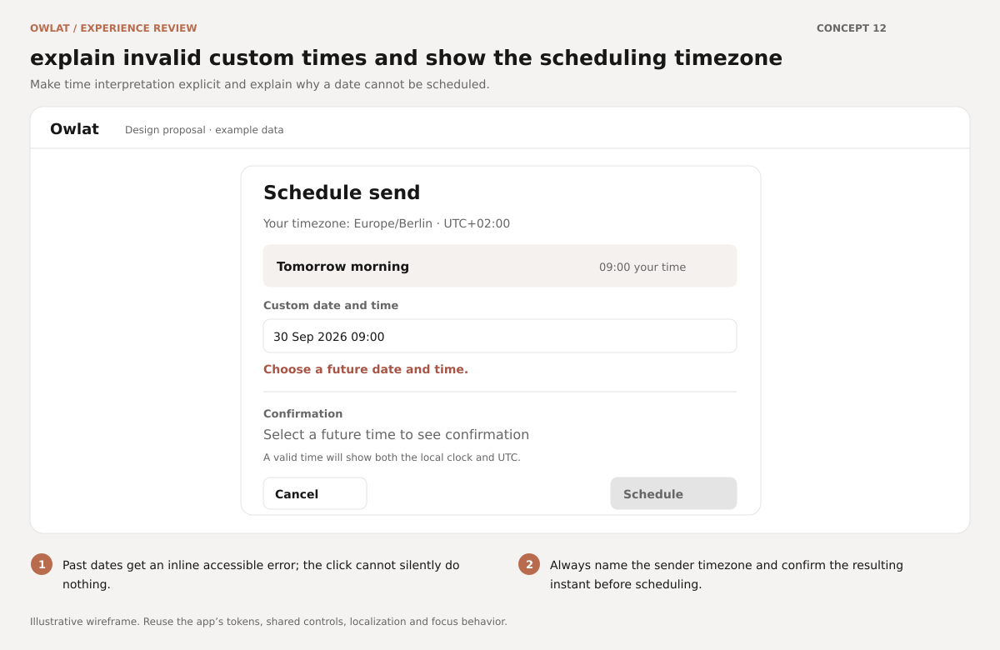
Open GitHub issueEditable SVG
Evidence and acceptance criteria
Source-confirmed custom-time validation and missing label/timezone context. No real outbound scheduling performed.
- Past/invalid dates have an inline, accessible explanation and cannot silently fail.
- The date/time field has an associated label and error description.
- The dialog always makes the sender timezone explicit and the emitted timestamp matches the displayed confirmation.
- Validate boundary conditions when the selected minute elapses while the dialog remains open; native picker min alone is insufficient.